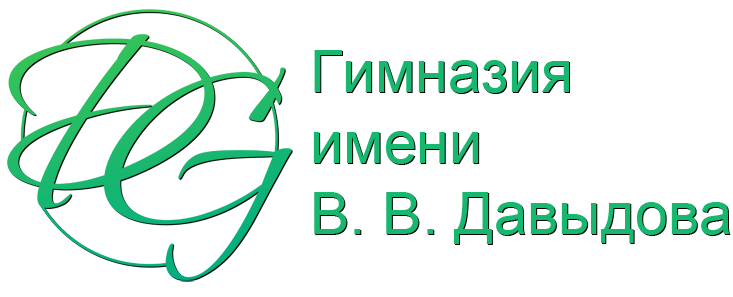
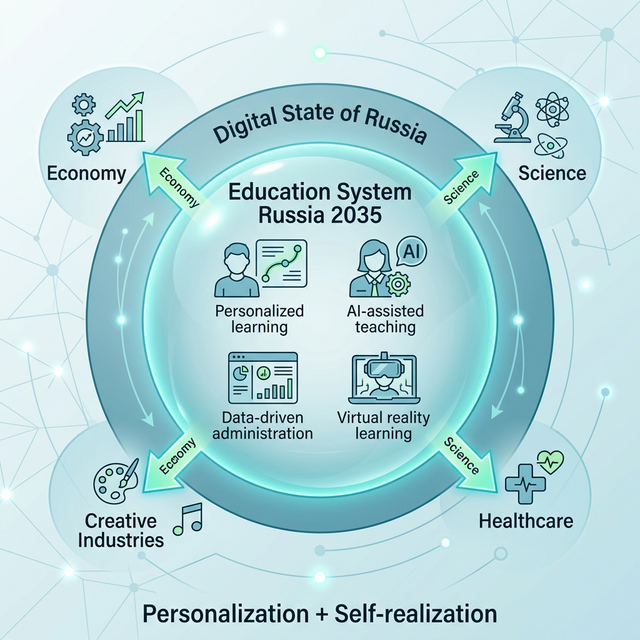

Выбор проекта на президентский грант 2026 г.
Участие гимназии в федеральных программах применения нейросетей в учебном процессе

Участие гимназии в федеральных программах применения нейросетей в учебном процессе
Единая экосистема платформ и сервисов государства для школ, учителей, родителей и учеников.
Все решения принимаются по реальным цифрам и аналитике в реальном времени. ИИ показывает пробелы класса/ученика и предлагает решения.
Повсеместная автоматизация информационных процессов: планирование уроков, проверка работ, генерация материалов, мониторинг прогресса.
Методика Эльконина — Давыдова. Фокус на формировании теоретического мышления и субъектности.
Индивидуальный путь обучения, который ИИ строит под темп, стиль мышления и интересы ребёнка.
Государство делает ИИ главным инструментом обновления школ.
Цель — персональное обучение, развитие талантов каждого ребёнка и подготовка к будущему.

300 учеников в современном здании. Полностью автоматизированные индивидуальные программы.
Интерактивный архив идей, участник научных мероприятий, цифровая память школы.
«Лаборатория Вертикального Развития» — образовательный хаб с гибким статусом (софт скиллс, йога, mindfulness и др.).
Гимназия превращается в производителя инновационных образовательных продуктов и сервисов на 10–15 лет вперёд.
Федеральный центр производства инноваций: авторские ИИ-модули, открытые методики, виртуальные лаборатории. Школа не только учит — она создаёт будущее образование.
Грант даст возможность перейти в более устойчивое финансовое и организационное положение. Мы станем центром передовых компетенций — надёжным партнёром государства и региона, сохраняя при этом управленческую свободу и независимую позицию.
Для каждого ученика индивидуально.
Автоматическая генерация и адаптация материалов.
Планирование, проверка, аналитика.
Лаборатории и проекты с нейросетями.
Обучение родителей + единый портал.
Мониторинг безопасности и этики ИИ.
Все средства идут только на проект.
Мы уже 35 лет растим детей, которые думают самостоятельно, а не просто запоминают. Грант — это инструмент, чтобы сделать школу устойчивее: меньше зависеть от родительских платежей, особенно когда вокруг экономическая неопределённость.
Мы понимаем риски: лишняя бюрократия, перегрузка людей, потеря свободы в решениях. Поэтому будем двигаться осторожно — сохраняя независимость, управленческую гибкость и нашу главную ценность: живое общение и развитие внутреннего потенциала каждого ребёнка.
Живое
общение.
Развитие потенциала.
Независимость.
Если всё сделать правильно, гимназия станет крепче, родители получат уверенность в будущем своих детей, а мы — пространство для настоящего творчества и роста.